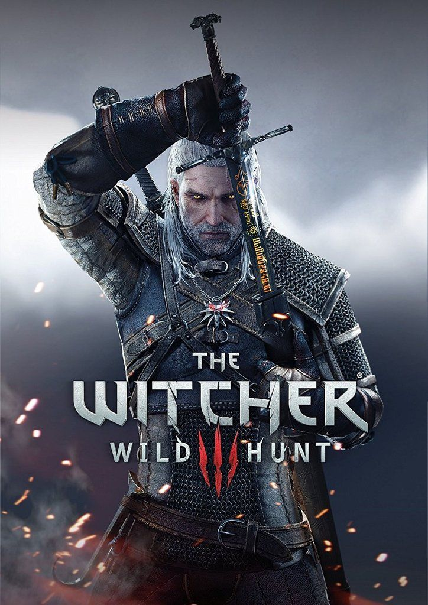

The Witcher 3: Wild Hunt
Ведьмак Геральт из Ривии — наемный охотник на чудовищ, недавно оправившийся от амнезии, пытается отыскать Цири, Дитя-Предназначения, которое может быть ключом к спасению мира от надвигающейся угрозы.
Характеристики
| Жанр | RPG, Приключение |
|---|---|
| Дата выхода | 19 мая 2015 |
| Разработчик | CD Projekt Red |
| Издатель | CD Projekt |
| Платформы | PC, PlayStation, Xbox, Nintendo Switch |
| Возрастной рейтинг | 18+ |